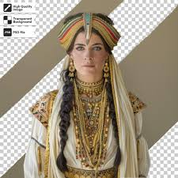

Vestimenta
La vestimenta en el Imperio Maurya, como en la India en general durante el período, era principalmente de algodón, con prendas sencillas como la antariya (una tela larga) para hombres y mujeres, y la uttariya para las mujeres. Los materiales eran en su mayoría naturales, como algodón, lino o muselina, y a veces se adornaban con bordados y joyas.

Detalles específicos:
Hombres y mujeres:
Usaban la antariya, una prenda sin coser, a veces con detalles de oro o piedras preciosas.
Hombres:
Vestían con antariyas y podrían llevar uttariyas.
Mujeres:
Las uttariyas eran una prenda común para las mujeres, y la antariya podía usarse de diferentes maneras.
Materiales:
Predominaban el algodón, el lino y la muselina.
Adornos:
La vestimenta podía ser adornada con joyas, bordados y otros detalles.
En resumen, la vestimenta maurya se caracterizaba por su sencillez y uso de materiales naturales, con un enfoque en la funcionalidad y, en ocasiones, la incorporación de elementos decorativos y lujosos para los más afortunados.